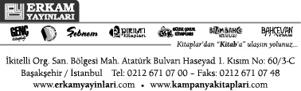

© Fikir ve Sanat Eserleri Yasası gereğince bu eserin yayın hakkı anlaşmalı olarak
Erkam Yayın San. ve Tic. A.Ş.’ne aittir.
İzinsiz, kısmen ya da
tamamen çoğaltılıp yayınlanamaz.
Erkam Yayın No: 163
Redaksiyon:
Prof. Dr. H. Kâmil Yılmaz
Abdullah Sert
Mustafa Eriş
Tercüme (1. Cilt):
Prof. Dr. H. Kâmil Yılmaz
Doç. Dr. Ömer Çelik
Doç. Dr. Süleyman Derin
Mehmet Toprak
Murat Sülün
Mizanpaj & Kapak:
Altınolukgrafik / Halil Ermiş
ISBN No:
978-605-302-327-2
Yayın ve Matbaa Sertifika No: 19891
Baskı Tarihi: İstanbul / 2010